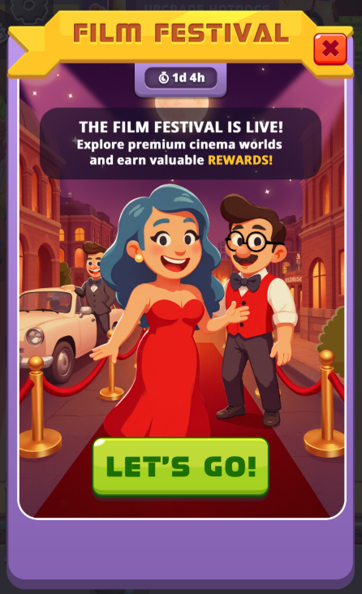
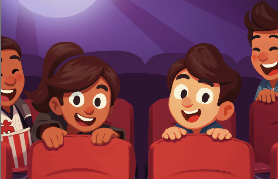
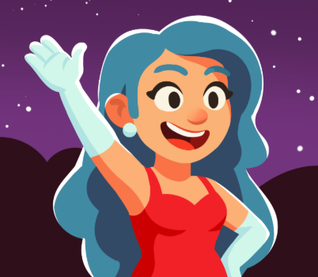
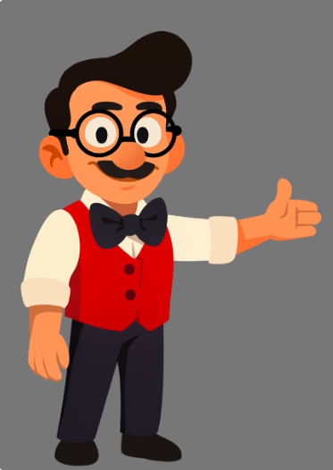

LoRA Training From Scratch
Cinema World (idle simulation game)
Cold-Start AI Assets
Training a LoRA with no existing data set

Role
- Art direction and managed model fine-tuning
Cross-functional
project team
Art Director, 2D Artist
Target users
2D Artists
The challenge
Training a LoRA with zero initial source data, relying on a single character design image and found references


The solution
With AI image manipulations and a few LoRA training iterations we landed on a style the art director was happy with

Human in the loop
Using generative AI workflows and LoRA training to eliminate the repetitive part allows the artist to focus on creative tasks and art direction rather than being a content mill
Bottlenecks and limitations
Relying on a limited number of initial assets required a few iterations of LoRA training, image generation, cherry-picking and training again with the new data set. Training on AI-generated content requires strict filtering to prevent quality degradation
LoRA Training From Scratch
From one character design to a production-ready style
The challenge
Generating consistent assets in a new, distinctive style.
Consistency and brand identity come from a LoRA, but training a LoRA requires a dataset, and as a new game there weren’t any existing assets.
System architecture
LoRA training with AI Toolkit, on FLUX.1 [dev] as the base model.
There was no source data to start from, only a single character design image and found references. The dataset was built and the LoRA trained in rounds: generate, curate, retrain, until the style held on new subjects.
-
Seed set
- Character design and found style references
-
Augmentation
- AI image manipulations create more on-style images from the seed set
-
Training
- Train the first LoRA on the small dataset
-
Generation and curation
- Best outputs approved by the art director join the next dataset
-
Style approved?
-
YesApproved style
-
NoRetraining
- Retrain on the expanded dataset; repeat generation and curation
Human in the loop
The art director set the target and approved every round. The model only learns from images people have chosen.
The style starts with people. The character design and references come from the art team
Every round is curated. Only approved outputs go back into the dataset
The artist moves to art direction. Once approved, the LoRA takes over the repetitive production, so the artist can focus on creative work instead of being a content mill
Limitations
Relying on a limited number of initial assets required a few iterations of LoRA training, image generation, cherry-picking and training again with the new dataset. Training on AI-generated content requires strict filtering to prevent quality degradation.